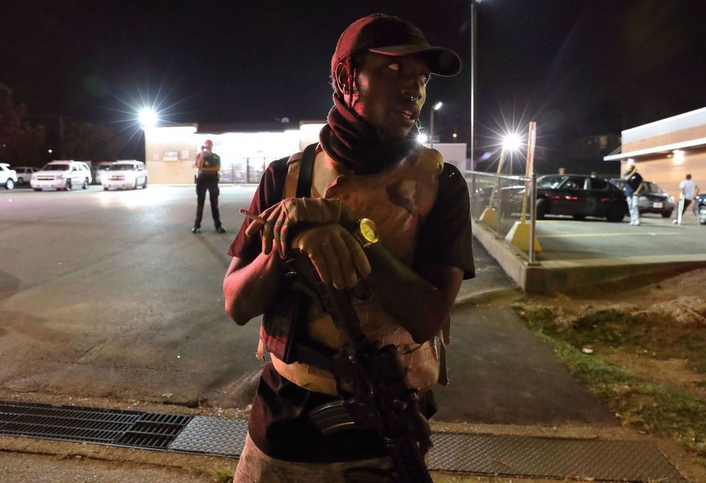

MISSION STATEMENT AND PRINCIPLES
PRDC stands boldly with our community against state and reactionary violence perpetuated by capitalism. Through education, mutual aid, and promotion of self-defense culture; a united and strong community can be forged.
PRDC is a coalition of radical leftists (anarchists, communists, etc) stepping in where the state has stepped out, bound by these mutual goals:
- Militantly defending the community from oppressive state, fascist and/or white supremacist forces.
- Facilitating the often unheard voice of the people by standing with the community against those that would wish them harm or attempt to silence their voices.
- Educating our community through outreach and engagement with a focus on self-defense/firearms training, knowledge of local law, and networking with other organizations with a shared goal of bettering the community through a wide range of tactics.
- Direct action countering injustice and harassment of at risk communities by the state and/or fascist and white supremacist entities.
- Addressing the issues symptomatic of systemic racism and capitalism. This includes - but is not limited to - poverty, homelessness, illegal evictions, etc. It is our hope to address these issues at a local level by working with other organizations and networking within the community.
- Standing in solidarity with working class struggles world-wide by supporting and promoting workers' rights locally. We observe picket lines, boycotts and strikes.
- Putting our bodies in front of threats to our community so that others can continue to be heard and contribute to revolutionary activities better suited to each individuals' abilities.
- Promoting unity among the left and all working people in our community.
- Developing a sense of intersectional camaraderie among the community in a spirit of friendship, loyalty and revolution.
We seek to set aside sectarian divisions in a hope that a coalition force comprised of the people with varying backgrounds, education, skills, and philosophies will be an authentic pragmatic and inclusive route to the liberation of the community. We are never to be self-appointed to serve the community, but let us be the community fighting for ourselves.
 Credit: @prdcstlSOLIDARITY WITH THE LGBTQIA+ COMMUNITY
A joint statement with Los Brown Berets - St. Louis. Phelps County, MO John Brown Gun Club and Mid-Missouri Redneck Revolt:
In the wake of the murder of Ally Steinfield, a transgender woman from Texas County, Missouri; and the police murder of Kiwi Herring, a trans woman of color from St. Louis - simply being an ally to the LGBTQIA+ community is no longer enough - it never was. Ally and Kiwi are not alone, they are among the 21 trans people murdered in America in 2017. The time of simply throwing money into corporations with rainbow flags on their logo and expressing disgust for inequality online is over.
We must be willing to take the battle for LGBTQIA+ rights beyond cyber-space, and stand proudly with our comrades, showing unabashed support by any means necessary.
No longer will we be silent as the LGBTQIA+ community reluctantly leave their homes in fear of violence, physically or otherwise, being perpetuated against them. No longer will we idly stand by as transphobic rhetoric is being spewed freely in public or in our spaces supposedly cultivated to be free of discrimination. Hate, through speech or action, will be met with swift consequence in our community. Violence against the LGBTQIA+ community will not be tolerated or ignored.
Comrades in Arms and Solidarity:
Peoples' Revolutionary Defense Coalition (PRDC) - St. Louis
Phelps County, MO John Brown Gun Club
Los Brown Berets - St. Louis
Mid-Missouri Redneck Revolt